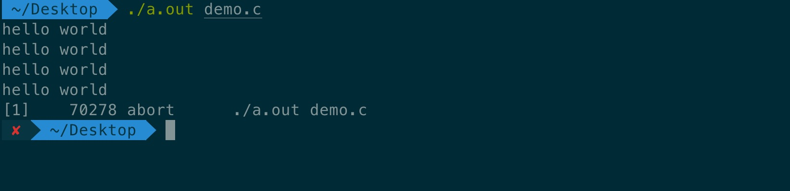

作为一个程序员，数据结构与算法是基础知识。就好比是武侠小说里的“内功心法”，只有掌握了内功心法，才能以不变应万变。接下来会跟着极客时间里王争老师的专栏《数据结构与算法之美》，对这一块知识进行学习总结。
定义
数组是一种线性表数据结构。它用一组连续的内存空间，来存储一组具有相同类型的数据。
重点理解：
线性表。每个线性表上的数据最多只有前和后两个方向。数组、链表、队列、栈等都是线性表结构。非线性表，比如二叉树、堆、图等。之所以叫非线性，是因为数据之间并不是简单的前后关系。
这里我的理解是，数组和链表是两种最基础的数据结构。队列、栈等线性表结构和二叉树、堆等非线性表都可以通过数组和链表来实现。或者说数组和链表是数据在内存中的表示方式，要么是连续的(数组)，要么是非连续的(链表)。
连续的内存空间和相同类型的数据。优点：随机访问。缺点：插入删除数据时，为保证连续性，需要做数据搬移操作。
随机访问
计算机会给每个内存单元分配一个地址，计算机通过地址来访问内存中的数据。当计算机需要随机访问数组中的某个元素时，会通过寻址公式，来计算该元素存储的内存地址：
1 | a[i]_address = base_address + i * data_type_size |
数组和链表的区别，很多人都回答说，“链表适合插入、删除，时间复杂度O(1)；数组适合查找，查找的复杂度为O(1)”。这种表述不准确，数组是适合查找操作，但是查找的时间复杂度并不是O(1)。即使是排好序的数组，使用二分查找，时间复杂度为O(logn)。所以，正确的表述是数组支持随机访问，根据下标随机访问的时间复杂度为O(1)。
关于这两种表述方式，我理解之间的差异是，一个通过下标查找value，通过寻址方式，时间复杂度是O(1)；另一种是在数组中查找value，排好序的数据，通过二分查找，时间复杂度为O(logn)。(直观理解为字典里根据key查找value和遍历字典查找value的区别，这种理解方式可能不太恰当)
低效的“插入”和“删除”
插入操作
平均时间复杂度O(n)。计算方式：(1+2+....+n)/n=O(n)
改进：将要插入指定位置的原元素放到最后，然后将新元素插入指定位置。时间复杂度O(1)
删除操作
平均时间复杂度O(n)
改进：先记录下已经删除的数据，当数组没有更多空间存储数据时，再触发执行一次真正的删除操作(JVM标记清除垃圾回收算法的核心思想)。时间复杂度视情况而定
警惕数组的访问越界问题
在C语言中，只要不是访问受限的内存，所有的内存空间都是可以自由访问的。
数组越界在C语言中是一种未决行为，并没有规定数组访问越界时编译器应该如何处理。因为访问数组的本质就是访问一段连续内存，只要数组通过偏移计算得到的内存地址是可用的，那么程序就可能不会报任何错误。
很多计算机病毒也正是利用到了代码中的数组越界可以访问非法地址的漏洞，来攻击系统，所以写代码的时候一定要警惕数组越界。但并非所有的语言都像C语言一样，把数组越界检测的工作丢给程序员来做，像Java本身就会做越界检查，会抛出越界异常。
文中的代码我在Mac终端通过gcc编译后执行，打印了四次hello world后异常退出，如图，

这个问题在文章后的评论里找到了答案：gcc有一个编译选项(-fno-stack-protectot)用于关闭堆栈保护功能。默认情况下启动了堆栈保护，不管i声明在前还是在后，i都会在数组之后压栈，只会循环四次；如果关闭堆栈保护功能，则会出现死循环。C语言代码如下：
1 |
|
容器能否完全替代数组
针对数组类型，很多语言都提供了容器类，比如Java中的ArrayList、C++ STL中的vector。我的理解，平时Python中经常使用的list、dict、set等提供操作api的类都称之为容器类。
ArrayList最大的优势就是可以将很多数组操作的细节封装起来。比如数组插入、删除数据时需要搬移其他数据等。另外，还有一个优势，就是支持支持动态扩容。
需要注意的是，扩容操作涉及内存申请和数据搬移，是比较耗时的，所以，如果事先能确定需要存储的数据大小，最好在创建ArrayList的时候事先指定数据大小
总结：
Java ArrayList无法存储基本数据类型，比如int、long，需要封装为Integer、Long类，而Autoboxing(自动装箱)、Unboxing(自动拆箱)则有一定的性能消耗，所以如果特别关注性能，或希望使用基本数据类型，就可以选用数组。- 如果数据大小事先已知，并且对数据的操作非常简单，用不到
ArrayList提供的大部分方法，也可以直接使用数组。 - 当表示多维数组时，用数组往往会更加直观。比如，
Object[][] array；而用容器的话，ArrayList<ArrayList<object>> array
对于业务开发，直接使用容器就足够了，省时省力。毕竟损耗一丢丢性能，完全不会影响到系统整体的性能，但是如果做一些特别底层的开发，比如开发网络框架，性能的优化需要做到极致，这个时候数组就会优于容器。
解答开篇
为什么大多数编程语言中，数组要从0开始编号，而不是从1开始呢？
- 通过寻址公式来看，从0开始编号，
a[k]_address = base_address + k * data_type_size；从1开始编号，a[k]_address = base_address + (k-1) * data_type_size。不难发现，从1开始编号，每次随机访问数组元素都多了一次减法元素，对于CPU来说，就是多了一次减法指令。数组作为非常基础的数据结构，通过下标随机访问数组元素又是其非常基础的编程操作，效率的优化就要尽可能做到极致。 - 历史原因。C语言设计者用0开始计数数组下标，之后的Java、JavaScript等高级语言都效仿了C语言，或者说，为了在一定程度上减少C语言程序员学习Java的学习成本，因此继续沿用了从0开始计数的习惯。
课后思考
JVM的标记清除垃圾回收算法的核心理念
大多数主流虚拟机采用可达性分析算法来判断对象是否存活，在标记阶段，会遍历所有的
GC ROOTS，将所有的GC ROOTS可达的对象标记为存活。只有当标记工作完成后，清理工作才会开始。不足：1. 效率问题，标记和清理效率都不高，但是当知道只有少数垃圾产生时会很高效。2.空间问题，会产生不连续的内存空间碎片。
联想：Python中的垃圾回收机制：主要通过引用计数法进行垃圾回收，通过“标记-清除”解决容器对象可能产生的循环引用问题；通过“分代回收”以空间换时间的方法提高垃圾回收率
二维数组的内存寻址公式
对于
m*n的数组，a[i][j] (i<m, j<n)的地址为：1
address = base_address + (i*n + j) * data_type_size
参考链接：